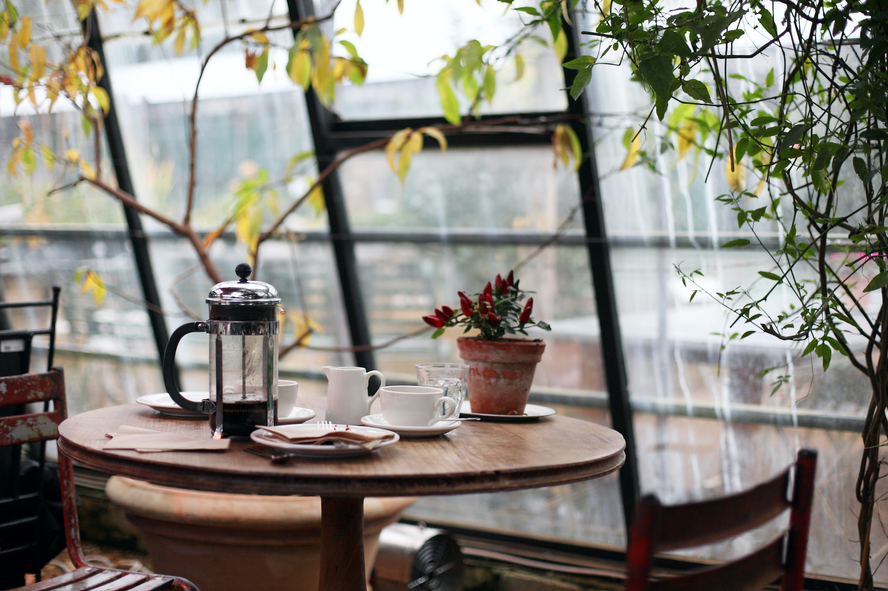

Welcome to JavaJam!
At JavaJam, enjoy the scent of freshly made coffee. We provide a large selection of beers, snacks, and musical evenings. Find your perfect spot, connect to our free Wi-Fi, and let the world drift away as you sip your favorite beverage.
Our Specials:
- JavaJam Brew - A time-honored favorite.
- Mocha Magic - An espresso, chocolate, and creamy milk mix.
- Whipped Cream Latte - Light and fluffy, this latte is ideal for individuals who enjoy a moderate coffee.
Every Friday evening, join us for amazing music and wonderful company. Explore our music calendar for upcoming events.